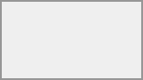

public links
users
groups
circles
talk conversations
users or groups on federated
Some options may not be available due to administrative configuration. See administrator documentation for details.
You can share files and folders via public links.
A random 15-digit token will be created. The link will look like https://cloud.example.com/s/yxcFKRWBJqYYzp4. We recommend that you review this setting regularly.
A number of options are available for public folder shares:
Read only to allow viewing and downloading
Allow upload and editing
With File drop, the sharee can only upload files to a folder without seeing the files that are already in that folder.
Hide download hides the download buttons and the default browser right-click options in order to make downloading for the sharee harder
Password protect
Set expiration date will automatically disable the share
Note to recipient
Unshare to revert the share
Add another link to create multiple public links with different rights
For public file shares, you may allow editing the file with one of
Password protection and file expiration are also propagated using Federated File Sharing since
When sharing with users, groups, circles or members of a Talk conversation, rights for the files or folder contents are adjustable:
As a sharee, you can configure if you automatically want to accept all incoming shares and have them added to your root folder, or if you want to be asked each time if you want to accept or decline the share.
For adjusting the acceptance setting, go to Settings > Personal > Sharing:

If the owner renames a shared file or folder, the new name will not be reflected on the recipient's side. This is needed to prevent overwriting existing files or folders on the recipient's end.
In order in order to find out if a file or folder is accessible to others through sharing of a superior folder hierarchy level, click on Others with access in the sharing tab:

The list shows all users, groups, chats etc. that the current object has been given access to through sharing of a superior folder in the hierarchy:
Click on the three dots to:
see who initiated the share
see where the share was initiated (click to navigate to the folder, as far as you have access there)
unshare the initial share (only accessible for the share owner)
This information is only visible to the owner of a file/folder or sharees with resharing rights.